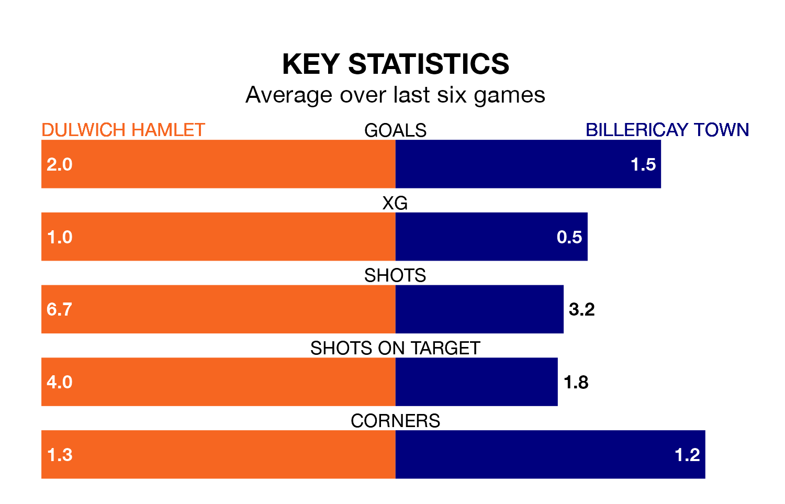

Dulwich Hamlet face a challenge to maintain their high-scoring form at home against a tight Billericay Town defence on Saturday.
With 66 goals in 34 games, Dulwich Hamlet are the third-highest scorers in the Isthmian Premier Division ahead of the 3pm kick-off at Imperial Fields.
They face a Billericay side who have scored 58 in 36 matches, but conceded only 46 goals, putting them joint-fourth among the league's tightest defences – only AFC Hornchurch, Horsham and Bognor Regis Town have conceded fewer goals.
Dulwich Hamlet are in good form in the Isthmian Premier Division, with four wins and a draw from their last six games.
With no wins and a draw over that period, Billericay's form is much worse – they have taken one point from 18, compared to the home side's 13.
In the last 10 years, Dulwich Hamlet and Billericay have played each other on 16 occasions. Dulwich Hamlet won four of them, Billericay 10, and they drew twice.
On average, Dulwich Hamlet scored 0.9 goals and Billericay 1.8 in those matches.
Their last meeting was on October 10, when Billericay won 3-0 at home.
Dulwich Hamlet are seventh in the table after 34 games, of which they have won 15 and drawn 10, earning 55 points.
Town are one place behind Dulwich Hamlet in eighth, with 17 wins and four draws putting them on the same number of points.
Dulwich Hamlet's last match was on March 23, a 2-0 win against Bognor Regis Town.
Billericay lost 2-1 against Wingate and Finchley last time out, also on March 23.
Updated: 12:39 (UTC), 26/03/24